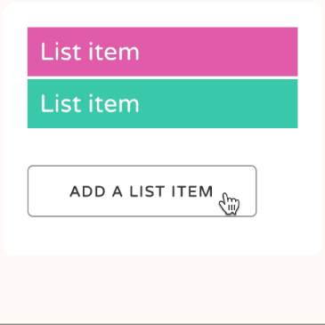
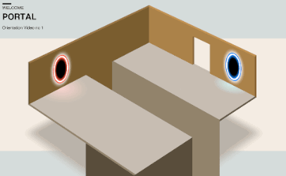
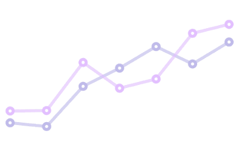

“Animation is about creating the illusion of life.”
Why animate?
Before we get into the technical side of CSS animation, let's discuss why we're animating in the first place.
More than words alone
Animation can convey information efficiently, or it can be used to grab attention but in the end it's all about communication.
Movement in our designs gives us a more powerful way to communicate. It transcends verbal and written language.
Subtle and appropriate animation can add appeal to our designs and credibility to our work. This happens because as humans we're used to seeing movement all the time in the “real” world. Bringing some of that life into our work brings the two closer.
As our web browsers continue to improve and better support animation, it's becoming a more viable option than ever. In many ways animation is as important to web design as the fonts we use and layouts we create.
What is animation on the web?
If we're keeping in mind the two main benefits of animation, conveying information and grabbing attention, we can come up with many ways these are useful on the web.
Animation can be subtle, like when the CodePen save button wiggles a little to remind us when we need to save our work:
We're very good at spotting movement. It's something we've evolved to do. Adding a little animation here and there can introduce some of that “illusion of life” in a very subtle way.
We can also use animation to introduce content to a page:
By animating information onto the page, we give our viewers an extra piece of information that might otherwise be missing. The animation both draws attention to the new content being added and gives context to that new information. Without animation it would just suddenly appear, possibly leaving the viewer unsure of whether it was there all along.
We can use animation to tell a story:
The above clip is based on an intructional video for the game “Portal”. However, telling stories through our content doesn't always need to be so literal. We can add subtle movement to show how data changes in a chart, like in this example: 
With great power comes great responsibility
It's easy to do too much with animation. Having too many things moving around on the page at once is distracting.
You may be noticing it right now, with those animations in-line in the page. It's usually a good idea to try to do less animation when possible. Any movement you do add will be all the more powerful.
This might mean only moving a small item on your page. Doing less.
Having said that, if you want to create more of a “wow” effect with larger animations, you can do so. If you do, make sure and stop when it's time for your viewers to focus on the content. This example from Rally does just that, with lots of movement going on that stops when it's time to read the menu content:
Inspiration
Animation has a long and rich history. Check out the article Principles of Animation for the Web. The principles draw from Disney's 1981 book The Illusion of Life: Disney Animation.
If you want to go further, dig into the Animator's Survival Kit videos. Youtube is full of sources of inspiration and ideas.
For loads of great examples, take some time to browse Hover States. This site features all sorts of interesting examples of animation from the web. Dribbble.com is helpful also.
For example, here's a nice example from Dribbble showing Google 's Material Design principles. Searching for “animation” is a great way to find inspiring ideas.
Summary
- Animation is kind of a big deal
- Used right, it can be a useful and powerful tool in our designs
- Use it to grab attention or convey information
- Don't overdo it
Homework
Think about your own work and how animation might help. Think about your portfolio. Are there any websites in there? If so, think carefully about whether or not a subtle amount of animation could help improve the site. Over the next few weeks you'll learn the techniques to make cool, lively animations to make your sites feel realatable and human.
It's tempting to go crazy and animate all the things, but try to look for ways subtle animation might better help your visitors understand the content. Is there a call‐to‐action on your page people are missing? Is there a sudden change in your page that's happening too suddenly, and could benefit from a smoother transition?